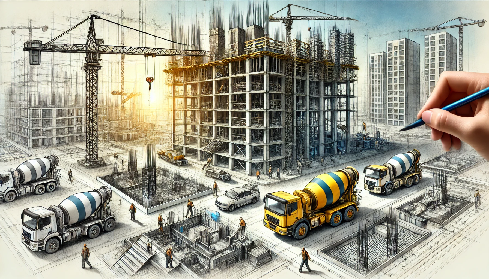

The Key Stages of Construction Services
The Key Stages of Construction Services: From Groundbreaking to Final Inspection
Content: "Construction services involve various stages that are critical to the successful completion of any building project. Here are the key stages in the construction process:
- Pre-Construction Planning: This stage involves site surveys, soil testing, and the development of detailed project plans. Pre-construction planning sets the foundation for the entire project, including timelines, budgets, and resource allocation. It also involves securing necessary permits and approvals.
- Site Preparation and Excavation:Before construction can begin, the site must be prepared. This involves clearing the land, leveling the ground, and setting up temporary facilities for workers. Excavation follows, where trenches are dug for foundations, and underground utilities are laid out.
- Foundation and Structural Work:Once the site is prepared, the construction of the foundation begins. This is a critical phase that includes laying concrete, steel reinforcements, and other materials that will support the structure. After the foundation, the building's framework is erected, including walls, floors, and roofs.
- Mechanical, Electrical, and Plumbing (MEP):This stage involves installing the essential systems that will make the building functional. This includes electrical wiring, plumbing, HVAC systems, and other mechanical installations. Ensuring these systems are correctly installed is crucial for the building's safety and usability.
- Interior and Exterior Finishing:After the main structure is complete and MEP systems are installed, the focus shifts to interior and exterior finishing. This includes installing windows, doors, insulation, drywall, flooring, painting, and exterior cladding. These finishes give the building its final appearance and prepare it for occupancy.
- Final Inspection and Handover:The final stage involves a thorough inspection of the building to ensure it meets all safety standards, building codes, and client specifications. Any issues identified during the inspection are addressed, and once everything is in order, the building is handed over to the owner or client.